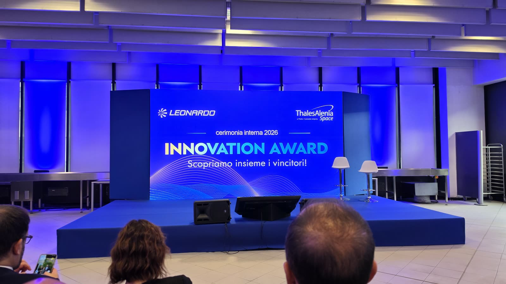
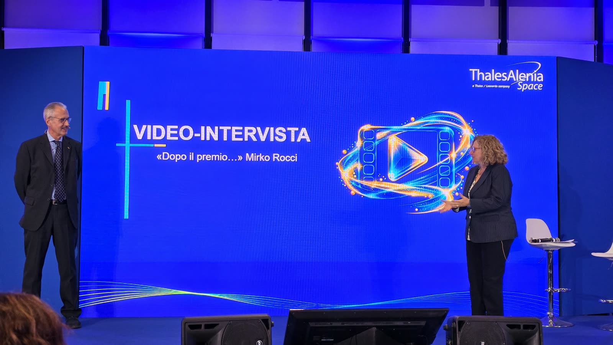

Innovation Award 2026 · Cerimonia
Il 28 ottobre, alla cerimonia del Thales Alenia Space Innovation Award 2026, è stata proiettata la mia videointervista «Dopo il premio...». Sono stato contento che fosse l'unica intervista a un vincitore delle edizioni passate.
Il reel della serata, in inglese, con la proiezione in sala e il percorso raccontato nell'intervista.
Davanti all'amministratore delegato, al CTO e a tutti i presenti ho provato a spiegare cosa significa per me l'innovazione e cosa viene dopo un premio. Nel mio caso quel percorso ha portato a due primi posti al Thales Alenia Space Innovation Award, nel 2023 e nel 2025 nella categoria Idea, alla Menzione Speciale di Leonardo consegnata dall'amministratore delegato Roberto Cingolani e a una domanda internazionale di brevetto.


Ringrazio Marco D'Angelo e la Comunicazione Interna per l'intervista, Thales Alenia Space e Leonardo, e tutte le persone che erano in sala.